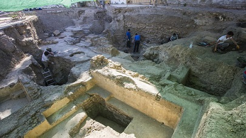

|
|
||||||||||||||||||||||||||||||||||||||||||||||||||||||||||
|
.................Tartesos,
Turdetanos, Cartagineses.............. Situada en una posición
estratégica, Carmona controlaba las vías de comunicación del valle del
Guadalquivir. En el 206 a.e.c. la ciudad fue conquistada por los
romanos, los cartagineses fueron expulsados tras la batalla de Ilipa.
La Carmo republicana ocupaba el mismo emplazamiento que la la ciudad Turdetana y Púnica, el barrio de San Blas. Con la pacificación de la Hispania, se inicia un período de prosperidad económico y una lenta pero segura romanización. Estrabón hablaba de la riqueza de la Turdetania, trigo, vino, aceite, cera, miel, ganado, caza... Carmo acuñó moneda siglos I y II a.e.c. con el símbolo de dos espigas enmarcando el nombre de la ciudad. En la época Flavia y con los Emperadores hispanos, Carmo vivió su época de esplendor. La ciudad se reformó y expandió adaptándose a los nuevos conceptos urbanísticos romanos. Situada sobre una meseta elevada con laderas muy escarpadas la ciudad en época romana se hallaba amurallada. En la actualidad se conservan varios lienzos de muralla y dos puertas la de Sevilla y Córdoba, y los restos de otra en el Raso de Santa Ana. La muralla medieval prácticamente discurre por encima de la romana excepto en las zonas de Albollón y Cenicero donde su perímetro fue variando a medida que se ganaba terreno a las dos vaguadas colmatadas de época romana. Las puertas de Sevilla y Córdoba marcaban los extremos occidental y oriental del cardo máximo, mientras que las puertas de Postigo y Morón marcaban el norte y el sur del decumano máximo. Julio César dijo de Carmo "Carmonenses quae est longe firmissima totius provinviae civitas" es decir, que Carmona era la ciudad más fuerte de la Bética. Con la crisis del siglo III, la ciudad se contrae, y comienza un proceso de recensión urbanística y se reutilizan los edificios abandonados.
PUERTA DE SEVILLA
Aunque se han encontrado
restos arqueológicos datados entre los siglos XIV y XII a.e.c., su
origen está establecido en el siglo IX a.e.c. El bastión y la puerta son
de origen cartaginés. Los cartagineses construyeron un baluarte sobre la
primitiva torre del siglo VIII a.e.c., para hacer frente al asalto de
los ejércitos romanos.
Los romanos reformaron el emplazamiento entre los siglos III a.e.c y I. Se construyó la nueva puerta y la poterna al norte del bastión. Estas obras se datan en la primera mitad del siglo I. En el bastión se construyó un paramento llamado muro de la cortina y un templo del que se conserva su base. Estas obras se dataron en la segunda mitad del siglo I.
PUERTA DE LA SEDÍA
Con las
excavaciones llevadas a cabo en la calle Torre del Oro en 1986 en el
solar nº 4 se descubrió los restos de una antigua puerta con dos arcos
de distinto tamaño. A través del trazado de la ciudad y su muralla, los
arqueólogos creen que era la puesta de salida por el noroeste que daba
salida al decumano máximo hacia
el camino de Lora del Río, Axati.
PUERTA DE MORÓN
Cercana a
la cuesta de San Mateo hacia el caminillo viejo en una zanja se
documentaron sillares cuya tipología constructiva era similar al de la
puerta de Córdoba.
TEATRO
En 1995 en
la c/ General Freire, se descubrieron un gran conjunto se sillares
correspondientes a la cimentación de un gran edificio. Todo apunta por
su localización y características constructivas que perteneciera al
Teatro. Pero Bonsór sostenía que el anfiteatro albergaría las don
funciones; Teatro y Anfiteatro.
Se localizó frente a la
Necrópolis junto a la Vía Augusta, en la actual Avenida Jorge
Bonsor. Data del S. I a.e.c. Sus excavaciones se iniciaron en
1885 a cargo de J. Fernández López y Jorge Bonsor. Se conserva
la arena cuyas medidas eran 55x39m; y la inma y media cavea
excavadas en la roca mientras que la suma cavea fue la única
parte edificada. La zona mejor conservada es la meridional. En
su fachada oriental presenta una rampa de entrada, semejante a
las que debió haber en cada una de las esquinas, que daban
acceso a los vomitorios.
Se cree que el graderío y los vestíbulos iban cubiertos con planchas de material noble, con nichos para las consabidas estatuas de los Emperadores y de la elite de Carmo.
TERMAS
Tradicionalmente se situaban en las
proximidades de la Iglesia de San Bartolomé. Pero en las excavaciones
llevadas a cabo en el solar nº 5 de la c/ Pozo Nuevo han salido a a la
luz parte de una piscina y estructuras de calentamiento y un mosaico que
se puede ver en el ayuntamiento.
Los restos hallados continúan bajo la calle. Tras cinco años de excavaciones, en la la Plaza Julián Besteiro y la plazuela de San José, en 2018 en el complejo de piscinas romanas del siglo I, se han sacado a la luz los últimos secretos de las termas romanas de Carmona. Tres piscinas de agua fría y dos cálidas construídas sobre un hypocaustum. Además, estos semisótanos estaban conectados entre ellos por pequeños arcos para que el calor pasara de una piscina a otra. Debajo de ellos circulaba una mina de agua, una especie de pozo del que extraían el agua necesaria, a 15m de profundidad. Foto: Juan Calos Muñoz / Sevilla 
La Necrópolis se data alrededor
del siglo I a.e.c. y se han descubierto enterramientos hasta
del siglo II.
El ritual de enterramiento más frecuente en Carmo era la incineración.
Los cadáveres eran
incinerados en quemaderos excavados en la roca donde se
colocaba la pira funeraria y en ocasiones estos quemaderos
eran utilizados como lugar de enterramiento. Se depositaban
las cenizas en la fosa y se cubría con sillares, ladrillos o
tégulas;
y una vez cubiertos de tierra, se colocaba una estela para
indicar el lugar y el nombre del difunto.
Tumba
del Elefante
Se trata de
un santuario dedicado al culto de Cibeles y de Attis. El culto de estos
dioses orientales llegó a alcanzar una enorme popularidad en Roma.
Attis era una deidad que moría y resucitaba cada año, que arraigó mucho entre los carmonenses. Junto a esta divinidad, Cibeles, la Diosa Madre, encarnación divina de la naturaleza, señora de la vida y de la muerte.
La tumba de Servilia
es la más monumental de la Necrópolis. Reproduce una lujosa mansión
de dos pisos, de cánones helenísticos con un amplio patio porticado
al que se abren diferentes estancias en dos pisos.
Uno de estos ámbitos lo constituye la galería cubierta, en cuyo tramo central se encuentra una cámara donde parece ser que estuvo originariamente la escultura de Servilia cuya estatua decapitada se halla en el museo. En el frontal del patio porticado se halla la cámara funeraria, que tiene un gran vestíbulo, de planta trapezoidal, cubierto por bóveda apuntada; que se supone seria mas antigua y ya estaría ocupada por otros enterramientos. La tumba está datada en época de Augusto y debió pertenecer a una familia importante de Carmo, quizás a un magistrado.
Otras
tumbas que merecen ser destacadas son la Tumba de los Cuatro
Departamentos, llamada así por sus cuatro cámaras o la Tumba del
Triclinium
del Olivo. El Triclinium era una
estancia que hacía la función de comedor y respondía a la tradición
romana de reunirse para celebrar los aniversarios de sus difuntos en
torno a una comida que se realizaba en la tumba. El mausoleo circular,
la tumba de las Guirnaldas, la tumba de las cuatro columnas...La tumba
del Ustrinum, la tumba de Postumio...
En esta
zona ha extramuros de la ciudad en la vía hacia Lora del Río,
Axati,
se han documentados varios hornos cerámicos y restos de las
instalaciones. Los hornos eran de planta circular construidos con
adobes, compuestos en dos partes; la inferior la cámara de combustión,
furnium
a la que se accedía a través de un pasillo escavado en el suelo y la
parte superior donde se colocaban las vasijas con adobes agujereados
para permitir pasar el calor.
Albius
era un alfarero carmonense del siglo I cuyo nombre se ha conservado
inciso en el sello de la marca de una
tegula
de su taller.
La calzada tiene una extensión
cercana a un kilómetro. Una gran reforma de la calzada y
puente romano se llevó a cabo en el s. XVIII y desde
entonces no se ha intervenido en la zona salvo algunas
actuaciones llevadas a cabo en los últimos años. Este tramo
de calzada formaba parte de la Vía Augusta que unía Cádiz
con Roma, siendo utilizada también en época musulmana. A
partir del siglo XV, la antigua calzada enlaza con el único
itinerario que llegaba a la corte madrileña, con el
consiguiente aumento del tránsito de personas.
A partir
del siglo XIX, la calzada queda prácticamente abandonada al construirse
un camino que bordeaba Carmona por el sur, con lo que su deterioro va en
aumento. De hecho, desde entonces son constantes las actas municipales
que recogen las quejas por el deterioro que sufre la zona. La calzada y
el puente se restauraron en 2004.
|
||||||||||||||||||||||||||||||||||||||||||||||||||||||||||